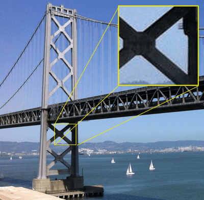
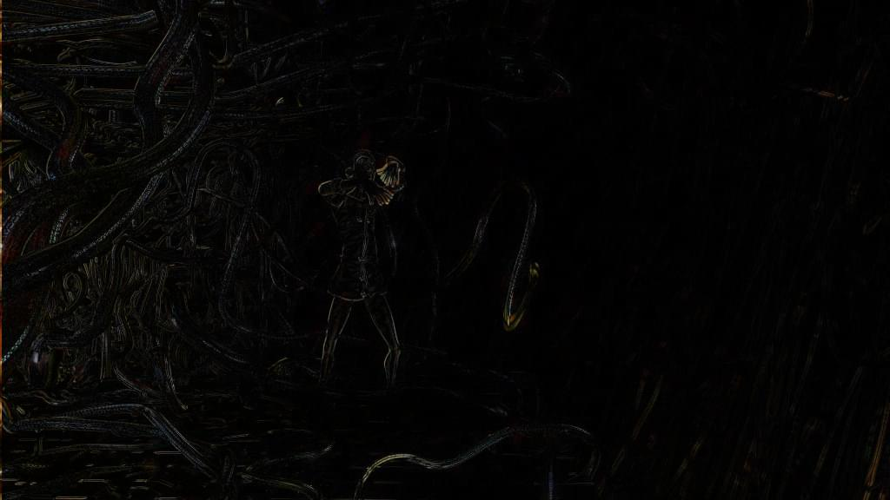

Due to the sheer size of uncompressed video data, it's necessary to compress it significantly in order to store it, let alone transmit it over a network. Imagine the amount of data needed to store uncompressed video:
Not only is the required storage space enormous, but the network bandwidth needed to transmit an uncompressed video like that would be enormous, at 249 MB/sec—not including audio and overhead. This is where video codecs come in. Just as audio codecs do for the sound data, video codecs compress the video data and encode it into a format that can later be decoded and played back or edited.
Most video codecs are lossy, in that the decoded video does not precisely match the source. Some details may be lost; the amount of loss depends on the codec and how it's configured, but as a general rule, the more compression you achieve, the more loss of detail and fidelity will occur. Some lossless codecs do exist, but they are typically used for archival and storage for local playback rather than for use on a network.
This guide introduces the video codecs you're most likely to encounter or consider using on the web, summaries of their capabilities and any compatibility and utility concerns, and advice to help you choose the right codec for your project's video.
The following video codecs are those which are most commonly used on the web. For each codec, the containers (file types) that can support them are also listed. Each codec provides a link to a section below which offers additional details about the codec, including specific capabilities and compatibility issues you may need to be aware of.
| Codec name (short) | Full codec name | Container support |
|---|---|---|
| AV1 | AOMedia Video 1 | MP4, WebM |
| AVC (H.264) | Advanced Video Coding | 3GP, MP4, WebM |
| H.263 | H.263 Video | 3GP |
| HEVC (H.265) | High Efficiency Video Coding | MP4 |
| {{anch("MP4V-ES")}} | MPEG-4 Video Elemental Stream | 3GP, MP4 |
| {{anch("MPEG-1")}} | MPEG-1 Part 2 Visual | MPEG, QuickTime |
| {{anch("MPEG-2")}} | MPEG-2 Part 2 Visual | MP4, MPEG, QuickTime |
| Theora | Theora | Ogg |
| VP8 | Video Processor 8 | 3GP, Ogg, WebM |
| VP9 | Video Processor 9 | MP4, Ogg, WebM |
As is the case with any encoder, there are two basic groups of factors affecting the size and quality of the encoded video: specifics about the source video's format and contents, and the characteristics and configuration of the codec used while encoding the video.
The simplest guideline is this: anything that makes the encoded video look more like the original, uncompressed, video will generally make the resulting data larger as well. Thus, it's always a tradeoff of size versus quality. In some situations, a greater sacrifice of quality in order to bring down the data size is worth that lost quality; other times, the loss of quality is unacceptable and it's necessary to accept a codec configuration that results in a correspondingly larger file.
The degree to which the format of the source video will affect the output varies depending on the codec and how it works. If the codec converts the media into an internal pixel format, or otherwise represents the image using a means other than simple pixels, the format of the original image doesn't make any difference. However, things such as frame rate and, obviously, resolution will always have an impact on the output size of the media.
Additionally, all codecs have their strengths and weaknesses. Some have trouble with specific kinds of shapes and patterns, or aren't good at replicating sharp edges, or tend to lose detail in dark areas, or any number of possibilities. It all depends on the underlying algorithms and mathematics.
| Feature | Effect on quality | Effect on size |
|---|---|---|
| Color depth (bit depth) | The higher the color bit depth, the higher the quality of color fidelity is achieved in the video. Additionally, in saturated portions of the image (that is, where colors are pure and intense, such as a bright, pure red [rgba(255, 0, 0, 1)]), color depths below 10 bits per component (10-bit color) allow banding, where gradients cannot be represented without visible stepping of the colors. |
Depending on the codec, higher color depths may result in larger compressed file sizes. The determining factor is what internal storage format is used for the compressed data. |
| Frame rate | Primarily affects the perceived smoothness of the motion in the image. To a point, the higher the frame rate, the smoother and more realistic the motion will appear. Eventually the point of diminishing returns is reached. See {{anch("Frame rate")}} below for details. | Assuming the frame rate is not reduced during encoding, higher frame rates cause larger compressed video sizes. |
| Motion | Compression of video typically works by comparing frames, finding where they differ, and constructing records containing enough information to update the previous frame to approximate the appearance of the following frame. The more successive frames differ from one another, the larger these differences are, and the less effective the compression is at avoiding the introduction of artifacts into the compressed video. | The complexity introduced by motion results in larger intermediate frames due to the higher number of differences between frames). For this and other reasons, the more motion there is in a video, the larger the output file will typically be. |
| Noise | Picture noise (such as film grain effects, dust, or other grittiness to the image) introduces variability. Variability generally makes compression more difficult, resulting in more lost quality due to the need to drop details to achieve the same level of compression. | The more variability—such as noise—there is in the image, the more complex the compression process and the less success the algorithm is likely to have compressing the image to the same degree. Unless you configure the encoder in a way that ignores some or all of the variations caused by noise, the compressed video will be larger. |
| Resolution (width and height) | Higher resolution video, presented in the same screen size, will typically be able to more accurately portray the original scene, barring effects introduced during compression. | The higher the resolution of a video, the larger it gets. This plays a key role in the final size of the video. |
The degree to which these affect the resulting encoded video will vary depending on the precise details of the situation, including which encoder you use and how it's configured. In addition to general codec options, the encoder could be configured to reduce the frame rate, to clean up noise, and/or to reduce the overall resolution of the video during encoding.
The algorithms used do encode video typically use one or more of a number of general techniques to perform their encoding. Generally speaking, any configuration option that is intended to reduce the output size of the video will probably have a negative impact on the overall quality of the video, or will introduce certain types of artifacts into the video. It's also possible to select a lossless form of encoding, which will result in a much larger encoded file but with perfect reproduction of the original video upon decoding.
In addition, each encoder utility may have variations in how they process the source video, resulting in differences in the output quality and/or size.
| Feature | Effect on quality | Effect on size |
|---|---|---|
| Lossless compression | No loss of quality | Lossless compression cannot reduce the overall video size nearly as much as lossy compression; the resulting files are likely to still be too large for general usage. |
| Lossy compression | To some degree, artifacts and other forms of quality degradation wil occur, depending on the specific codec and how much compression is being applied | The more the encoded video is allowed to deviate from the source, the easier it is to accomplish higher compression rates |
| Quality setting | The higher the quality configuration, the more like the original media the encoded video will look | In general, higher quality settings will result in larger encoded video files; the degree to which this is true varies depending on the codec |
| Bit rate | Quality generally improves with higher bit rates | Higher bit rates inherently lead to larger output files |
The options available when encoding video, and the values to be assigned to those options, will vary not only from one codec to another but depending on the encoding software you use. The documentation included with your encoding software will help you to understand the specific impact of these options on the encoded video.
Artifacts are side effects of a lossy encoding process in which the lost or rearranged data results in visibly negative effects. Once an artifact has appeared, it may linger for a while, because of how video is displayed. Each frame of video is presented by applying a set of changes to the currently-visible frame. This means that any errors or artifacts will compound over time, resulting in glitches or otherwise strange or unexpected deviations in the image that linger for a time.
To resolve this, and to improve seek time through the video data, periodic key frames (also known as intra-frames or i-frames) are placed into the video file. The key frames are full frames, which are used to repair any damage or artifact residue that's currently visible.
Aliasing is a general term for anything that upon being reconstructed from the encoded data does not look the same as it did before compression. There are many forms of aliasing; the most common ones you may see include:
Moiré patternsA Moiré pattern is a large-scale spatial interference pattern produced when a pattern in the source image and the manner in which the encoder operates are slightly out of alignment spatially. The artifacts generated by the encoder then introduce strange, swirling effects in the source image's pattern upon decoding. |
|
Staircase effectThe staircase effect is a spatial artifact that occurs when diagonal straight or curved edges that should be smooth take on a jagged appearance, looking somewhat like a set of stair steps. This is the effect that is being reduced by "anti-aliasing" filters. |
|
Wagon-wheel effectThe wagon-wheel effect (or {{interwiki("wikipedia", "stroboscopic effect")}}) is the visual effect that's commonly seen in film, in which a turning wheel appears to rotate at the wrong speed, or even in reverse, due to an interaction between the frame rate and the compression algorithm. The same effect can occur with any repeating pattern that moves, such as the ties on a railway line, posts along the side of a road, and so forth. This is a temporal (time-based) aliasing issue; the speed of the rotation interferes with the frequency of the sampling performed during compression or encoding. |
Color edging is a type of visual artifact that presents as spurious colors introduced along the edges of colored objects within the scene. These colors have no intentional color relationship to the contents of the frame.
The act of removing data in the process of encoding video requires that some details be lost. If enough compression is applied, parts or potentially all of the image could lose sharpness, resulting in a slightly fuzzy or hazy appearance.
Lost sharpness can make text in the image difficult to read, as text—especially small text—is very detail-oriented content, where minor alterations can significantly impact legibility.
Lossy compression algorithms can introduce {{interwiki("wikipedia", "ringing artifacts", "ringing")}}, an effect where areas outside an object are contaminated with colored pixels generated by the compression algorithm. This happens when an algorithm that uses blocks that span across a sharp boundary between an object and its background. This is particularly common at higher compression levels.
Note the blue and pink fringes around the edges of the star above (as well as the stepping and other significant compression artifacts). Those fringes are the ringing effect. Ringing is similar in some respects to {{anch("Mosquito noise", "mosquito noise")}}, except that while the ringing effect is more or less steady and unchanging, mosquito noise shimmers and moves.
RInging is another type of artifact that can make it particularly difficult to read text contained in your images.
Posterization occurs when the compression results in the loss of color detail in gradients. Instead of smooth transitions through the various colors in a region, the image becomes blocky, with blobs of color that approximate the original appearance of the image.
Note the blockiness of the colors in the plumage of the bald eagle in the photo above (and the snowy owl in the background). The details of the feathers is largely lost due to these posterization artifacts.
Contouring or color banding is a specific form of posterization in which the color blocks form bands or stripes in the image. This occurs when the video is encoded with too coarse a quantization configuration. As a result, the video's contents show a "layered" look, where instead of smooth gradients and transitions, the transitions from color to color are abrupt, causing strips of color to appear.
In the example image above, note how the sky has bands of different shades of blue, instead of being a consistent gradient as the sky color changes toward the horizon. This is the contouring effect.
Mosquito noise is a temporal artifact which presents as noise or edge busyness that appears as a flickering haziness or shimmering that roughly follows outside the edges of objects with hard edges or sharp transitions between foreground objects and the background. The effect can be similar in appearance to {{anch("Ringing", "ringing")}}.

The photo above shows mosquito noise in a number of places, including in the sky surrounding the bridge. In the upper-right corner, an inset shows a close-up of a portion of the image that exhibits mosquito noise.
Mosquito noise artifacts are most commonly found in MPEG video, but can occur whenever a discrete cosine transform (DCT) algorithm is used; this includes, for example, JPEG still images.
Compression of video generally works by comparing two frames and recording the differences between them, one frame after another, until the end of the video. This technique works well when the camera is fixed in place, or the objects in the frame are relatively stationary, but if there is a great deal of motion in the frame, the number of differences between frames can be so great that compression doesn't do any good.
{{interwiki("wikipedia", "Motion compensation")}} is a technique that looks for motion (either of the camera or of objects in the frame of view) and determines how many pixels the moving object has moved in each direction. Then that shift is stored, along with a description of the pixels that have moved that can't be described just by that shift. In essence, the encoder finds the moving objects, then builds an internal frame of sorts that looks like the original but with all the objects translated to their new locations. In theory, this approximates the new frame's appearance. Then, to finish the job, the remaining differences are found, then the set of object shifts and the set of pixel differences are stored in the data representing the new frame. This object that describes the shift and the pixel differences is called a residual frame.
| Original frame | Inter-frame differences | Difference after motion compensation |
|---|---|---|
|  | ||
| The first full frame as seen by the viewer. | Here, only the differences between the first frame and the following frame are seen. Everything else is black. Looking closely, we can see that the majority of these differences come from a horizontal camera move, making this a good candidate for motion compensation. | To minimize the number of pixels that are different, here we take into account the panning of the camera by first shifting the first frame to the right by two pixels, then by taking the difference. This compensates for the panning of the camera, allowing for more overlap between the two frames. |
| Images from Wikipedia | ||
There are two general types of motion compensation: global motion compensation and block motion compensation. Global motion compensation generally adjusts for camera movements such as tracking, dolly movements, panning, tilting, rolling, and up and down movements. Block motion compensation handles localized changes, looking for smaller sections of the image that can be encoded using motion compensation. These blocks are normally of a fixed size, in a grid, but there are forms of motion compensation that allow for variable block sizes, and even for blocks to overlap.
There are, however, artifacts that can occur due to motion compensation. These occur along block borders, in the form of sharp edges that produce false ringing and other edge effects. These are due to the mathematics involved in the coding of the residual frames, and can be easily noticed before being repaired by the next key frame.
In certain situations, it may be useful to reduce the video's dimensions in order to improve the final size of the video file. While the immediate loss of size or smoothness of playback may be a negative factor, careful decision-making can result in a good end result. If a 1080p video is reduced to 720p prior to encoding, the resulting video can be much smaller while having much higher visual quality; even after scaling back up during playback, the result may be better than encoding the original video at full size and accepting the quality hit needed to meet your size requirements.
Similarly, you can remove frames from the video entirely and decrease the frame rate to compensate. This has two benefits: it makes the overall video smaller, and that smaller size allows motion compensation to accomplish even more for you. For exmaple, instead of computing motion differences for two frames that are two pixels apart due to inter-frame motion, skipping every other frame could lead to computing a difference that comes out to four pixels of movement. This lets the overall movement of the camera be represented by fewer residual frames.
The absolute minimum frame rate that a video can be before its contents are no longer perceived as motion by the human eye is about 12 frames per second. Less than that, and the video becomes a series of still images. Motion picture film is typically 24 frames per second, while standard definition television is about 30 frames per second (slightly less, but close enough) and high definition television is between 24 and 60 frames per second. Anything from 24 FPS upward will generally be seen as satisfactorily smooth; 30 or 60 FPS is an ideal target, depending on your needs.
In the end, the decisions about what sacrifices you're able to make are entirely up to you and/or your design team.
The AOMedia Video 1 (AV1) codec is an open format designed by the Alliance for Open Media specifically for internet video. It achieves higher data compression rates than {{anch("VP9")}} and {{anch("HEVC", "H.265/HEVC")}}, and as much as 50% higher rates than AVC. AV1 is fully royalty-free and is designed for use by both the {{HTMLElement("video")}} element and by WebRTC.
AV1 currently offers three profiles: main, high, and professional with increasing support for color depths and chroma subsampling. In addition, a series of levels are specified, each defining limits on a range of attributes of the video. These attributes include frame dimensions, image area in pixels, display and decode rates, average and maximum bit rates, and limits on the number of tiles and tile columns used in the encoding/decoding process.
For example, level AV1 level 2.0 offers a maximum frame width of 2048 pixels and a maximum height of 1152 pixels, but its maximum frame size in pixels is 147,456, so you can't actually have a 2048x1152 video at level 2.0. It's worth noting, however, that at least for Firefox and Chrome, the levels are actually ignored at this time when performing software decoding, and the decoder just does the best it can to play the video given the settings provided. For compatibility's sake going forward, however, you should stay within the limits of the level you choose.
The primary drawback to AV1 at this time is that it is very new, and support is still in the process of being integrated into most browsers. Additionally, encoders and decoders are still being optimized for performance, and hardware encoders and decoders are still mostly in development rather than production. For this reason, encoding a video into AV1 format takes a very long time, since all the work is done in software.
For the time being, because of these factors, AV1 is not yet ready to be your first choice of video codec, but you should watch for it to be ready to use in the future.
| Supported bit rates | Varies depending on the video's level; theoretical maximum reaches 800 Mbps at level 6.3[2] | ||||||||||||||
|---|---|---|---|---|---|---|---|---|---|---|---|---|---|---|---|
| Supported frame rates | Varies by level; for example, level 2.0 has a maximum of 30 FPS while level 6.3 can reach 120 FPS | ||||||||||||||
| Compression | Lossy DCT-based algorithm | ||||||||||||||
| Supported frame sizes | 8 x 8 pixels to 65,535 x 65535 pixels with each dimension allowed to take any value between these | ||||||||||||||
| Supported color modes |
|
||||||||||||||
| HDR support | Yes | ||||||||||||||
| Variable Frame Rate (VFR) support | Yes | ||||||||||||||
| Browser compatibility |
|
||||||||||||||
| Container support | ISOBMFF[1], MPEG-TS, MP4, WebM | ||||||||||||||
| {{Glossary("RTP")}} / WebRTC compatible | Yes | ||||||||||||||
| Supporting/Maintaining organization | Alliance for Open Media | ||||||||||||||
| Specification | https://aomediacodec.github.io/av1-spec/av1-spec.pdf | ||||||||||||||
| Licensing | Royalty-free, open standard |
[1] {{interwiki("wikipedia", "ISO Base Media File Format")}}
[2] See the AV1 specification's tables of levels, which describe the maximum resolutions and rates at each level.
The MPEG-4 specification suite's Advanced Video Coding (AVC) standard is specified by the identical ITU H.264 specification and the MPEG-4 Part 10 specification. It's a motion compensation based codec that is widely used today for all sorts of media, including broadcast television, {{Glossary("RTP")}} videoconferencing, and as the video codec for Blu-Ray discs.
AVC is highly flexible, with a number of profiles with varying capabilities; for example, the Constrained Baseline Profile is designed for use in videoconferencing and mobile scenarios, using less bandwidth than the Main Profile (which is used for standard definition digital TV in some regions) or the High Profile (used for Blu-Ray Disc video). Most of the profiles use 8-bit color components and 4:2:0 chroma subsampling; The High 10 Profile adds support for 10-bit color, and advanced forms of High 10 add 4:2:2 and 4:4:4 chroma subsampling.
AVC also has special features such as support for multiple views of the same scene (Multiview Video Coding), which allows, among other things, the production of stereoscopic video.
AVC is a proprietary format, however, and numerous patents are owned by multiple parties regarding its technologies. Commercial use of AVC media requires a license, though the MPEG LA patent pool does not require license fees for streaming internet video in AVC format as long as the video is free for end users.
Non-web browser implementations of WebRTC (any implementation which doesn't include the JavaScript APIs) are required to support AVC as a codec in WebRTC calls. While web browsers are not required to do so, some do.
In HTML content for web browsers, AVC is broadly compatible and many platforms support hardware encoding and decoding of AVC media. However, be aware of its licensing requirements before choosing to use AVC in your project!
| Supported bit rates | Varies by level | ||||||||||||||||||||||||||||||
|---|---|---|---|---|---|---|---|---|---|---|---|---|---|---|---|---|---|---|---|---|---|---|---|---|---|---|---|---|---|---|---|
| Supported frame rates | Varies by level; up to 300 FPS is possible | ||||||||||||||||||||||||||||||
| Compression | Lossy DCT-based algorithm, though it's possible to create lossless macroblocks within the image | ||||||||||||||||||||||||||||||
| Supported frame sizes | Up to 8,192 x 4,320 pixels | ||||||||||||||||||||||||||||||
| Supported color modes |
Some of the more common or interesting profiles:
|
||||||||||||||||||||||||||||||
| HDR support | Yes; {{interwiki("wikipedia", "Hybrid Log-Gamma")}} or Advanced HDR/SL-HDR; both are part of ATSC | ||||||||||||||||||||||||||||||
| Variable Frame Rate (VFR) support | Yes | ||||||||||||||||||||||||||||||
| Browser compatibility |
|
||||||||||||||||||||||||||||||
| Container support | 3GP, MP4, WebM | ||||||||||||||||||||||||||||||
| {{Glossary("RTP")}} / WebRTC compatible | Yes | ||||||||||||||||||||||||||||||
| Supporting/Maintaining organization | MPEG / ITU | ||||||||||||||||||||||||||||||
| Specification | https://mpeg.chiariglione.org/standards/mpeg-4/advanced-video-coding https://www.itu.int/rec/T-REC-H.264 |
||||||||||||||||||||||||||||||
| Licensing | Proprietary with numerous patents. Commercial use requires a license. Note that multiple patent pools may apply. |
[1] Firefox support for AVC is dependent upon the operating system's built-in or preinstalled codecs for AVC and its container in order to avoid patent concerns.
ITU's H.263 codec was designed primarily for use in low-bandwidth situations. In particular, its focus is for video conferencing on PSTN (Public Switched Telephone Networks), {{Glossary("RTSP")}}, and SIP (IP-based videoconferencing) systems. Despite being optimized for low-bandwidth networks, it is fairly CPU intensive and may not perform adequately on lower-end computers. The data format is similar to that of MPEG-4 Part 2.
H.263 has never been widely used on the web. Variations on H.263 have been used as the basis for other proprietary formats, such as Flash video or the Sorenson codec. However, no major browser has ever included H.263 support by default. Certain media plugins have enabled support for H.263 media.
Unlike most codecs, H.263 defines fundamentals of an encoded video in terms of the maximum bit rate per frame (picture), or BPPmaxKb. During encoding, a value is selected for BPPmaxKb, and then the video cannot exceed this value for each frame. The final bit rate will depend on this, the frame rate, the compression, and the chosen resolution and block format.
H.263 has been superseded by H.264 and is therefore considered a legacy media format which you generally should avoid using if you can. The only real reason to use H.263 in new projects is if you require support on very old devices on which H.263 is your best choice.
H.263 is a proprietary format, with patents held by a number of organizations and companies, including Telenor, Fujitsu, Motorola, Samsung, Hitachi, Polycom, Qualcomm, and so on. To use H.263, you are legally obligated to obtain the appropriate licenses.
| Supported bit rates | Unrestricted, but typically below 64 Kbps | ||||||||||||||
|---|---|---|---|---|---|---|---|---|---|---|---|---|---|---|---|
| Supported frame rates | Any | ||||||||||||||
| Compression | Lossy DCT-based algorithm | ||||||||||||||
| Supported frame sizes | Up to 1408 x 1152 pixels[2] | ||||||||||||||
| Supported color modes | YCbCr; each picture format (sub-QCIF, QCIF, CIF, 4CIF, or 16CIF) defines the frame size in pixels as well as how many rows each of luminance and chrominance samples are used for each frame | ||||||||||||||
| HDR support | No | ||||||||||||||
| Variable Frame Rate (VFR) support | No | ||||||||||||||
| Browser compatibility |
|
||||||||||||||
| Container support | 3GP, MP4, QuickTime | ||||||||||||||
| {{Glossary("RTP")}} / WebRTC compatible | No | ||||||||||||||
| Supporting/Maintaining organization | ITU | ||||||||||||||
| Specification | https://www.itu.int/rec/T-REC-H.263/ | ||||||||||||||
| Licensing | Proprietary; appropriate license or licenses are required. Note that multiple patent pools may apply. |
[1] While Firefox does not generally support H.263, the OpenMax platform implementation (used for the Boot to Gecko project upon which Firefox OS was based) did support H.263 in 3GP files.
[2] Version 1 of H.263 specifies a set of picture sizes which are supported. Later versions may support additional resolutions.
The High Efficiency Video Coding (HVEC) codec is defined by ITU's H.265 as well as by MPEG-H Part 2 (the still in-development follow-up to MPEG-4). HEVC was designed to support efficient encoding and decoding of video in sizes including very high resolutions (including 8K video), with a structure specifically designed to let software take advantage of modern processors. Theoretically, HEVC can achieve compressed file sizes half that of {{anch("AVC")}} but with comparable image quality.
For example, each coding tree unit (CTU)—similar to the macroblock used in previous codecs—consists of a tree of luma values for each sample as well as a tree of chroma values for each chroma sample used in the same coding tree unit, as well as any required syntax elements. This structure supports easy processing by multiple cores.
An interesting feature of HEVC is that the main profile supports only 8 bit per component color with 4:2:0 chroma subsampling. Also interesting is that 4:4:4 video is handled specially. Instead of having the luma samples (representing the image's pixels in grayscale) and the Cb and Cr samples (indicating how to alter the grays to create color pixels), the three channels are instead treated as three monochrome images, one for each color, which are then combined during rendering to produce a full-color image.
HEVC is a proprietary format and is covered by a number of patents. Licensing is managed by MPEG LA; fees are charged to developers rather than to content producers and distributors. Be sure to review the latest license terms and requirements before making a decision on whether or not to use HEVC in your app or web site!
| Supported bit rates | Up to 800,000 Kbps | ||||||||||||||||||||||||||||||
|---|---|---|---|---|---|---|---|---|---|---|---|---|---|---|---|---|---|---|---|---|---|---|---|---|---|---|---|---|---|---|---|
| Supported frame rates | Varies by level; up to 300 FPS is possible | ||||||||||||||||||||||||||||||
| Compression | Lossy DCT-based algorithm | ||||||||||||||||||||||||||||||
| Supported frame sizes | 128 x 96 to 8,192 x 4,320 pixels; varies by profile and level | ||||||||||||||||||||||||||||||
| Supported color modes |
Information below is provided for the major profiles. There are a number of other profiles available that are not included here.
|
||||||||||||||||||||||||||||||
| HDR support | Yes | ||||||||||||||||||||||||||||||
| Variable Frame Rate (VFR) support | Yes | ||||||||||||||||||||||||||||||
| Browser compatibility |
|
||||||||||||||||||||||||||||||
| Container support | MP4 | ||||||||||||||||||||||||||||||
| {{Glossary("RTP")}} / WebRTC compatible | No | ||||||||||||||||||||||||||||||
| Supporting/Maintaining organization | ITU / MPEG | ||||||||||||||||||||||||||||||
| Specifications | http://www.itu.int/rec/T-REC-H.265 https://www.iso.org/standard/69668.html |
||||||||||||||||||||||||||||||
| Licensing | Proprietary; confirm your compliance with the licensing requirements. Note that multiple patent pools may apply. |
[1] Internet Explorer and Edge only supports HEVC on devices with a hardware codec.
[2] Mozilla will not support HEVC while it is encumbered by patents.
The MPEG-4 Video Elemental Stream (MP4V-ES) format is part of the MPEG-4 Part 2 Visual standard. While in general, MPEG-4 part 2 video is not used by anyone because of its lack of compelling value related to other codecs, MP4V-ES does have some usage on mobile. MP4V is essentially H.263 encoding in an MPEG-4 container.
Its primary purpose is to be used to stream MPEG-4 audio and video over an {{Glossary("RTP")}} session. However, MP4V-ES is also used to transmit MPEG-4 audio and video over a mobile connection using 3GP.
You almost certainly don't want to use this format, since it isn't supported in a meaningful way by any major browsers, and is quite obsolete. Files of this type should have the extension .mp4v, but sometimes are inaccurately labeled .mp4.
| Supported bit rates | 5 Kbps to 1 Gbps and more | ||||||||||||||
|---|---|---|---|---|---|---|---|---|---|---|---|---|---|---|---|
| Supported frame rates | No specific limit; restricted only by the data rate | ||||||||||||||
| Compression | Lossy DCT-based algorithm | ||||||||||||||
| Supported frame sizes | Up to 4,096 x 4,096 pixels | ||||||||||||||
| Supported color modes | YCrCb with chroma subsampling (4:2:0, 4:2:2, and 4:4:4) supported; up to 12 bits per component | ||||||||||||||
| HDR support | No | ||||||||||||||
| Variable Frame Rate (VFR) support | Yes | ||||||||||||||
| Browser compatibility |
|
||||||||||||||
| Container support | 3GP, MP4 | ||||||||||||||
| {{Glossary("RTP")}} / WebRTC compatible | No | ||||||||||||||
| Supporting/Maintaining organization | MPEG | ||||||||||||||
| Specification | {{RFC(6416)}} | ||||||||||||||
| Licensing | Proprietary; obtain a license through MPEG LA and/or AT&T as needed |
[1] Firefox supports MP4V-ES in 3GP containers only.
[2] Chrome does not support MP4V-ES; however, Chrome OS does.
MPEG-1 Part 2 Video was unveiled at the beginning of the 1990s. Unlike the later MPEG video standards, MPEG-1 was created solely by MPEG, without the {{Glossary("ITU", "ITU's")}} involvement.
Because any MPEG-2 decoder can also play MPEG-1 video, it's compatible with a wide variety of software and hardware devices. There are no active patents remaining in relation to MPEG-1 video, so it may be used free of any licensing concerns. However, few web browsers support MPEG-1 video without the support of a plugin, and with plugin use deprecated in web browsers, these are generally no longer available. This makes MPEG-1 a poor choice for use in web sites and web applications.
| Supported bit rates | Up to 1.5 Mbps | ||||||||||||||
|---|---|---|---|---|---|---|---|---|---|---|---|---|---|---|---|
| Supported frame rates | 23.976 FPS, 24 FPS, 25 FPS, 29.97 FPS, 30 FPS, 50 FPS, 59.94 FPS, and 60 FPS | ||||||||||||||
| Compression | Lossy DCT-based algorithm | ||||||||||||||
| Supported frame sizes | Up to 4,095 x 4,095 pixels | ||||||||||||||
| Supported color modes | Y'CbCr with 4:2:0 chroma subsampling with up to 12 bits per component | ||||||||||||||
| HDR support | No | ||||||||||||||
| Variable Frame Rate (VFR) support | No | ||||||||||||||
| Browser compatibility |
|
||||||||||||||
| Container support | MPEG | ||||||||||||||
| {{Glossary("RTP")}} / WebRTC compatible | No | ||||||||||||||
| Supporting/Maintaining organization | MPEG | ||||||||||||||
| Specification | https://www.iso.org/standard/22411.html | ||||||||||||||
| Licensing | Proprietary; however, all patents have expired, so MPEG-1 may be used freely |
MPEG-2 Part 2 is the video format defined by the MPEG-2 specification, and is also occasionally referred to by its {{Glossary("ITU")}} designation, H.262. It is very similar to MPEG-1 video—in fact, any MPEG-2 player can automatically handle MPEG-1 without any special work—except it has been expanded to support higher bit rates and enhanced encoding techniques.
The goal was to allow MPEG-2 to compress standard definition television, so interlaced video is also supported. The standard definition compression rate and the quality of the resulting video met needs well enough that MPEG-2 is the primary video codec used for DVD video media.
MPEG-2 has several profiles available with different capabilities. Each profile is then available four levels, each of which increases attributes of the video, such as frame rate, resolution, bit rate, and so forth. Most profiles use Y'CbCr with 4:2:0 chroma subsampling, but more advanced profiles support 4:2:2 as well. In addition, there are four levels, each of which offers support for larger frame dimensions and bit rates. For example, the {{interwiki("wikipedia", "ATSC standards", "ATSC")}} specification for television used in North America supports MPEG-2 video in high definition using the Main Profile at High Level, allowing 4:2:0 video at both 1920 x 1080 (30 FPS) and 1280 x 720 (60 FPS), at a maximum bit rate of 80 Mbps.
However, few web browsers support MPEG-2 without the support of a plugin, and with plugin use deprecated in web browsers, these are generally no longer available. This makes MPEG-2 a poor choice for use in web sites and web applications.
| Supported bit rates | Up to 100 Mbps; varies by level and profile | |||||||||||||||
|---|---|---|---|---|---|---|---|---|---|---|---|---|---|---|---|---|
| Supported frame rates |
|
|||||||||||||||
| Compression | Lossy DCT-based algorithm | |||||||||||||||
| Supported frame sizes |
|
|||||||||||||||
| Supported color modes | Y'CbCr with 4:2:0 chroma subsampling in most profiles; the "High" and "4:2:2" profiles support 4:2:2 chroma subsampling as well. | |||||||||||||||
| HDR support | No | |||||||||||||||
| Variable Frame Rate (VFR) support | No | |||||||||||||||
| Browser compatibility |
|
|||||||||||||||
| Container support | MPEG, MPEG-TS (MPEG Transport Stream), MP4, QuickTime | |||||||||||||||
| {{Glossary("RTP")}} / WebRTC compatible | No | |||||||||||||||
| Supporting/Maintaining organization | MPEG / ITU | |||||||||||||||
| Specification | https://www.itu.int/rec/T-REC-H.262 https://www.iso.org/standard/61152.html |
|||||||||||||||
| Licensing | Proprietary; all patents have expired worldwide with the exception of in Malaysia and the Philippines as of April 1, 2019, so MPEG-2 can be used freely outside those two countries. Patents are licensed by MPEG LA. |
{{interwiki("wikipedia", "Theora")}}, developed by Xiph.org, is an open and free video codec which may be used without royalties or licensing. Theora is comparable in quality and compression rates to MPEG-4 Part 2 Visual and AVC, making it a very good if not top-of-the-line choice for video encoding. But its status as being free from any licensing concerns and its relatively low CPU resource requirements make it a popular choice for many software and web projects. The low CPU impact is particularly useful since there are no hardware decoders available for Theora.
Theora was originally based upon the VC3 codec by On2 Technologies. The codec and its specification were released under the LGPL license and entrusted to Xiph.org, which then developed it into the Theora standard.
One drawback to Theora is that it only supports 8 bits per color component, with no option to use 10 or more in order to avoid color banding. That said, 8 bits per component is still the most commonly-used color format in use today, so this is only a minor inconvenience in most cases. Also, Theora can only be used in an Ogg container. The biggest drawback of all, however, is that it is not supported by Safari, leaving Theora unavailable not only on macOS but on all those millions and millions of iPhones and iPads.
The Theora Cookbook offers additional details about Theora as well as the Ogg container format it is used within.
| Supported bit rates | Up to 2 Gbps | ||||||||||||||
|---|---|---|---|---|---|---|---|---|---|---|---|---|---|---|---|
| Supported frame rates | Arbitrary; any non-zero value is supported. The frame rate is specified as a 32-bit numerator and a 32-bit denominator, to allow for non-integer frame rates. | ||||||||||||||
| Compression | Lossy DCT-based algorithm | ||||||||||||||
| Supported frame sizes | Any combination of width and height up to 1,048,560 x 1,048,560 pixels | ||||||||||||||
| Supported color modes | Y'CbCr with 4:2:0, 4:2:2, and 4:4:4 chroma subsampling at 8 bits per component | ||||||||||||||
| HDR support | No | ||||||||||||||
| Variable Frame Rate (VFR) support | Yes[1] | ||||||||||||||
| Browser compatibility |
|
||||||||||||||
| Container support | Ogg | ||||||||||||||
| {{Glossary("RTP")}} / WebRTC compatible | No | ||||||||||||||
| Supporting/Maintaining organization | Xiph.org | ||||||||||||||
| Specification | https://www.theora.org/doc/ | ||||||||||||||
| Licensing | Open and free of royalties and any other licensing requirements |
[1] While Theora doesn't support Variable Frame Rate (VFR) within a single stream, multiple streams can be chained together within a single file, and each of those can have its own frame rate, thus allowing what is essentially VFR. However, this is impractical if the frame rate needs to change frequently.
[2] Edge supports Theora with the optional Web Media Extensions add-on.
The Video Processor 8 (VP8) codec was initially created by On2 Technologies. Following their purchase of On2, Google released VP8 as an open and royalty-free video format under a promise not to enforce the relevant patents. In terms of quality and compression rate, VP8 is comparable to {{anch("AVC")}}.
If supported by the browser, VP8 allows video with an alpha channel, allowing the video to play with the background able to be seen through the video to a degree specified by each pixel's alpha component.
There is good browser support for VP8 in HTML content, especially within WebM files. This makes VP8 a good candidate for your content, although VP9 is an even better choice if available to you. Web browsers are required to support VP8 for WebRTC, but not all browsers that do so also support it in HTML audio and video elements.
| Supported bit rates | Arbitrary; no maximum unless level-based limitations are enforced | |||||||||||||||||||||
|---|---|---|---|---|---|---|---|---|---|---|---|---|---|---|---|---|---|---|---|---|---|---|
| Supported frame rates | Arbitrary | |||||||||||||||||||||
| Compression | Lossy DCT-based algorithm | |||||||||||||||||||||
| Supported frame sizes | Up to 16,384 x 16,384 pixels | |||||||||||||||||||||
| Supported color modes | Y'CbCr with 4:2:0 chroma subsampling at 8 bits per component | |||||||||||||||||||||
| HDR support | No | |||||||||||||||||||||
| Variable Frame Rate (VFR) support | Yes | |||||||||||||||||||||
| Browser compatibility |
|
|||||||||||||||||||||
| Container support | 3GP, Ogg, WebM | |||||||||||||||||||||
| {{Glossary("RTP")}} / WebRTC compatible | Yes; VP8 is one of the spec-required codecs for WebRTC | |||||||||||||||||||||
| Supporting/Maintaining organization | ||||||||||||||||||||||
| Specification | {{RFC(6386)}} | |||||||||||||||||||||
| Licensing | Open and free of royalties and any other licensing requirements |
[1] Edge support for VP8 requires the use of Media Source Extensions.
[2] Safari only supports VP8 in WebRTC connections.
[3] Firefox only supports VP8 in MSE when no H.264 hardware decoder is available. Use {{domxref("MediaSource.isTypeSupported()")}} to check for availability.
Video Processor 9 (VP9) is the successor to the older VP8 standard developed by Google. Like VP8, VP9 is entirely open and royalty-free. Its encoding and decoding performance is comparable to or slightly faster than that of AVC, but with better quality. VP9's encoded video quality is comparable to that of HEVC at similar bit rates.
VP9's main profile supports only 8-bit color depth at 4:2:0 chroma subsampling levels, but its profiles include support for deeper color and the full range of chroma subsampling modes. It supports several HDR imiplementations, and offers substantial freedom in selecting frame rates, aspect ratios, and frame sizes.
VP9 is widely supported by browsers, and hardware implementations of the codec are fairly common. VP9 is one of the two video codecs mandated by WebM (the other being {{anch("VP8")}}). Of note, however, is that Safari supports neither WebM nor VP9, so if you choose to use VP9, be sure to offer a fallback format such as AVC or HEVC for iPhone, iPad, and Mac users.
Aside from the lack of Safari support, VP9 is a good choice if you are able to use a WebM container and are able to provide a fallback video in a format such as AVC or HEVC for Safari users. This is especially true if you wish to use an open codec rather than a proprietary one. If you can't provide a fallback and aren't willing to sacrifice Safari compatibility, VP9 in WebM is a good option. Otherwise, you should probably consider a different codec.
| Supported bit rates | Arbitrary; no maximum unless level-based limitations are enforced | |||||||||||||||||||||
|---|---|---|---|---|---|---|---|---|---|---|---|---|---|---|---|---|---|---|---|---|---|---|
| Supported frame rates | Arbitrary | |||||||||||||||||||||
| Compression | Lossy DCT-based algorithm | |||||||||||||||||||||
| Supported frame sizes | Up to 65,536 x 65,536 pixels | |||||||||||||||||||||
| Supported color modes |
Color spaces supported: {{interwiki("wikipedia", "Rec. 601")}}, {{interwiki("wikipedia", "Rec. 709")}}, {{interwiki("wikipedia", "Rec. 2020")}}, {{interwiki("wikipedia", "SMPTE C")}}, SMPTE-240M (obsolete; replaced by Rec. 709), and {{interwiki("wikipedia", "sRGB")}}. |
|||||||||||||||||||||
| HDR support | Yes; HDR10+, HLG, and PQ | |||||||||||||||||||||
| Variable Frame Rate (VFR) support | Yes | |||||||||||||||||||||
| Browser compatibility |
|
|||||||||||||||||||||
| Container support | MP4, Ogg, WebM | |||||||||||||||||||||
| {{Glossary("RTP")}} / WebRTC compatible | Yes | |||||||||||||||||||||
| Supporting/Maintaining organization | ||||||||||||||||||||||
| Specification | https://www.webmproject.org/vp9/ | |||||||||||||||||||||
| Licensing | Open and free of royalties and any other licensing requirements |
[1] Firefox only supports VP8 in MSE when no H.264 hardware decoder is available. Use {{domxref("MediaSource.isTypeSupported()")}} to check for availability.
The decision as to which codec or codecs to use begins with a series of questions to prepare yourself:
In the sections below, we offer recommended codec selections for specific use cases. For each use case, you'll find up to two reccommendations. If the codec which is considered best for the use case is proprietary or may require royalty payments, then two options are provided: first, an open and royalty-free option, followed by the proprietary one.
If you are only able to offer a single version of each video, you can choose the format that's most appropriate for your needs.The first one is recommended as being a good combnination of quality, performance, and compatibility. The second option will be the most broadly compatible choice, at the expense of some amount of quality, preformance, and/or size.
First, let's look at the best options for videos presented on a typical web site such as a blog, informational site, small business web site where videos are used to demonstrate products (but not where the videos themselves are a product), and so forth.
A WebM container using the {{anch("VP8")}} codec for video and the Opus codec for audio. These are all open, royalty-free formats which are generally well-supported, although only in quite recent browsers, which is why a fallback is a good idea.
<video controls src="filename.webm"></video>
An MP4 container and the {{anch("AVC")}} (H.264) video codec, ideally with AAC as your audio codec. This is because the MP4 container with AVC and AAC codecs within is a broadly-supported combination—by every major browser, in fact—and the quality is typically good for most use cases. Make sure you verify your compliance with the license requirements, however.
<video controls>
<source type="video/webm"
src="filename.webm">
<source type="video/mp4"
src="filename.mp4">
</video>
Keep in mind that the {{HTMLElement("video")}} element requires a closing </video> tag, whether or not you have any {{HTMLElement("source")}} elements inside it.
If your mission is to present video at the highest possible quality, you will probably benefit from offering as many formats as possible, as the codecs capable of the best quality tend also to be the newest, and thus the most likely to have gaps in browser compatibility.
A WebM container using AV1 for video and Opus for audio. If you're able to use the High or Professional profile when encoding AV1, at a high level like 6.3, you can get very high bit rates at 4K or 8K resolution, while maintaining excellent video quality. Encoding your audio using Opus's Fullband profile at a 48 kHz sample rate maximizes the audio bandwidth captured, capturing nearly the entire frequency range that's within human hearing.
<video controls src="filename.webm"></video>
An MP4 container using the {{anch("HEVC")}} codec using one of the advanced Main profiles, such as Main 4:2:2 with 10 or 12 bits of color depth, or even the Main 4:4:4 profile at up to 16 bits per component. At a high bit rate, this provides excellent graphics quality with remarkable color reproduction. In addition, you can optionally include HDR metadata to provide high dynamic range video. For audio, use the AAC codec at a high sample rate (at least 48 kHz but ideally 96kHz) and encoded with complex encoding rather than fast encoding.
<video controls>
<source type="video/webm"
src="filename.webm">
<source type="video/mp4"
src="filename.mp4">
</video>
There are not currently any lossless—or even near-lossless—video codecs generally available in web browsers. The reason for this is simple: video is huge. Lossless compression is by definition less effective than lossy compression. For example, uncompressed 1080p video (1920 by 1080 pixels) with 4:2:0 chroma subsampling needs at least 1.5 Gbps. Using lossless compression such as FFV1 (which is not supported by web browsers) could perhaps reduce that to somewhere around 600 Mbps, depending on the content. That's still a huge number of bits to pump through a connection every second, and is not currently practical for any real-world use.
This is the case even though some of the lossy codecs have a lossless mode available; the lossless modes are not implemented in any current web browsers. The best you can do is to select a high-quality codec that uses lossy compression and configure it to perform as little compression as possible. One way to do this is to configure the codec to use "fast" compression, which inherently means less compression is achieved.
To prepare video for archival purposes from outside your web site or app, use a utility that performs compression on the original uncompressed video data. For example, the free x264 utility can be used to encode video in {{anch("AVC")}} format using a very high bit rate:
x264 --crf 18 -preset ultrafast --output outfilename.mp4 infile
While other codecs may have better best-case quality levels when compressing the video by a significant margin, their encoders tend to be slow enough that the nearly-lossless encoding you get with this compression is vastly faster at about the same overall quality level.
Given the constraints on how close to lossless you can get, you might consider using {{anch("AVC")}} or {{anch("AV1")}}. For example, if you're using the MediaStream Recording API to record video, you might use code like the following when creating your {{domxref("MediaRecorder")}} object:
const kbps = 1024;
const Mbps = kbps*kbps;
const options = {
mimeType: 'video/webm; codecs="av01.2.19H.12.0.000.09.16.09.1, flac"',
bitsPerSecond: 800*Mbps,
};
let recorder = new MediaRecorder(sourceStream, options);
This example creates a MediaRecorder configured to record {{anch("AV1")}} video using BT.2100 HDR in 12-bit color with 4:4:4 chroma subsampling and FLAC for lossless audio. The resulting file will use a bit rate of no more than 800 Mbps shared between the video and audio tracks. You will likely need to adjust these values depending on hardware performance, your requirements, and the specific codecs you choose to use. This bit rate is obviously not realistic for network transmission and would likely only be used locally.
Breaking down the value of the codecs parameter into its dot-delineated properties, we see the following:
| Value | Desccription |
|---|---|
av01 |
The four-character code (4CC) designation identifying the {{anch("AV1")}} codec. |
2 |
The profile. A value of 2 indicates the Professional profile. A value of 1 is the High profile, while a value of 0 would specify the Main profile. |
19H |
The level and tier. This value comes from the table in section A.3 of the AV1 specification, and indicates the high tier of Level 6.3. |
12 |
The color depth. This indicates 12 bits per component. Other possible values are 8 and 10, but 12 is the highest-accuracy color representation available in AV1. |
0 |
The monochrome mode flag. If 1, then no chroma planes would be recorded, and all data should be structly luma data, resulting in a greyscale image. We've specified 0 because we want color. |
000 |
The chroma subsampling mode, taken from section 6.4.2 in the AV1 specification. A value of 000, combined with the monochrome mode value 0, indicates that we want 4:4:4 chroma subsampling, or no loss of color data. |
09 |
The color primaries to use. This value comes from section 6.4.2 in the AV1 specification; 9 indicates that we want to use BT.2020 color, which is used for HDR. |
16 |
The transfer characteristics to use. This comes from section 6.4.2 as well; 16 indicates that we want to use the characteristics for BT.2100 PQ color. |
09 |
The matrix coefficents to use, from the section 6.4.2 again. A value of 9 specifies that we want to use BT.2020 with variable luminance; this is also known as BT.2010 YbCbCr. |
1 |
The video "full range" flag. A value of 1 indicates that we want the full color range to be used. |
The documentation for your codec choices will probably offer information you'll use when constructing your codecs parameter.
{kind=link}
{kind=link}
{kind=link}
{kind=link}
{kind=link}
{kind=link}